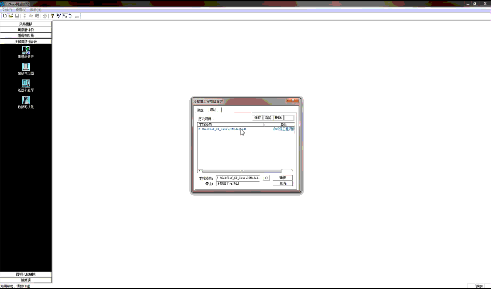
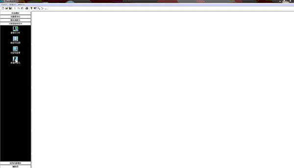

广西大学
建筑工程系 · 助理教授
GUANGXI UNIVERSITY · CIVIL ENGINEERING
您好，我是
助理教授 / 硕士生导师
广西大学 · 土木建筑工程学院 · 建筑工程系
桥梁与结构风工程研究所（团队负责人：赵林 长江学者特聘教授）
人工智能辅助结构设计
新能源基础设施结构防灾减灾
本科生科研招募 · AI + 土木工程 / 新能源工程
面向新能源工程，
探索更智能的结构设计与安全评估。
我是广西大学土木建筑工程学院建筑工程系的董旭，现任助理教授、硕士生导师。博士毕业于同济大学，期间赴加拿大西安大略大学联合培养，主要从事新能源基础设施结构防灾减灾、人工智能辅助结构设计与安全评估等方面的研究。
建筑工程系 · 助理教授
土木工程 · 博士
土木工程 · 联合培养博士
土木工程 · 硕士
土木工程 · 学士
以人工智能与新能源工程为切入点，
连接结构设计、性能评估与智慧运维。
AI + 土木工程
面向典型工程结构，探索利用人工智能体实现结构参数化建模、结构分析、设计校核及智能优化，推动土木工程设计向智能化、自动化发展。
设计工具与研究实践
围绕结构建模、计算与设计校核，开展智能设计工具研究。
研究工具 · 动态演示
两段演示展示结构设计分析平台的操作过程。
可播放动画，也可放大查看细节。


新能源工程 + 结构防灾减灾
面向核电冷却塔、风力发电设施等重大工程结构，开展台风、龙卷风等极端风环境下的结构安全性能评估，服务新能源基础设施建设。
面向对人工智能、新能源工程、结构设计
及科研创新感兴趣的本科生。
欢迎对科研创新感兴趣的本科生加入。
不要求你一开始就具备很强的科研基础。
我更看重学习主动性、责任心和持续投入的意愿。
参与真实科研项目，合作撰写科技论文、申请国家发明专利，参加大创及学科竞赛，为保研、考研复试和奖学金评选积累科研经历。
结合科研表现与发展意向，提供学术指导和升学建议，积极协助对接同济大学、山东大学、华北电力大学、加拿大西安大略大学等高校相关研究团队。
结合科研项目经历与行业联系，提供职业规划与就业推荐支持，拓宽核电、电力及新能源领域的专业就业渠道。
中国广核电工程有限公司 / 中国核电工程有限公司 / 国核电力规划设计研究院 / 国网电力工程研究院 / 华能清能院